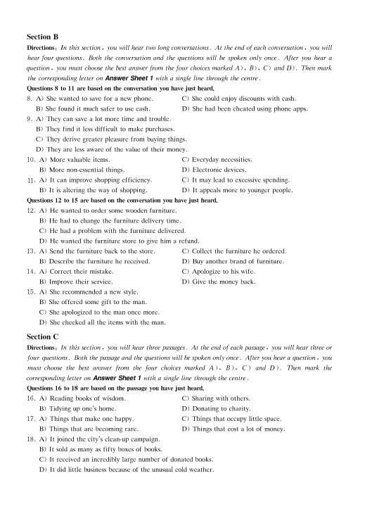
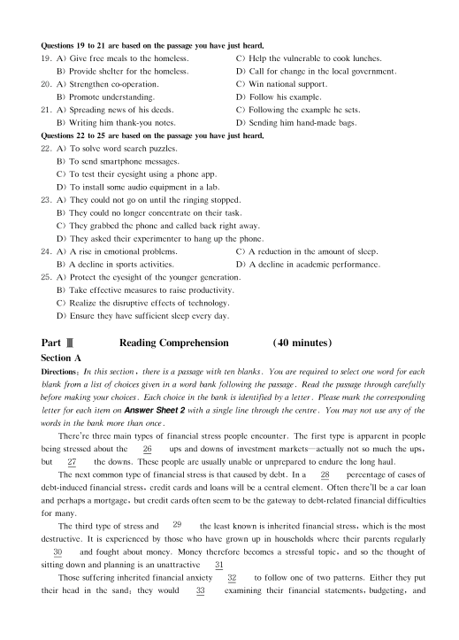
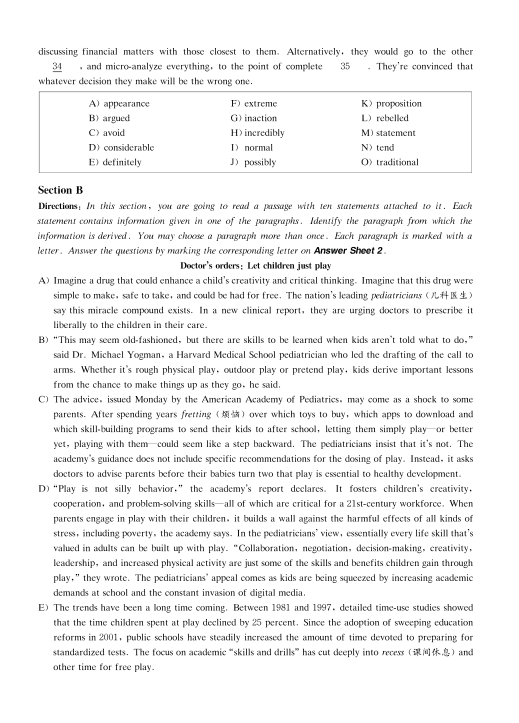
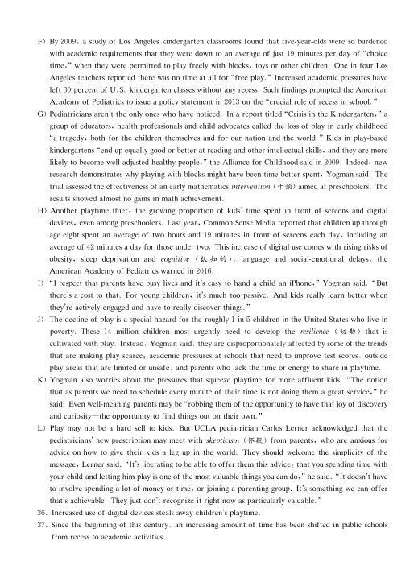
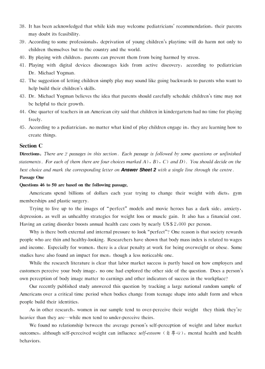
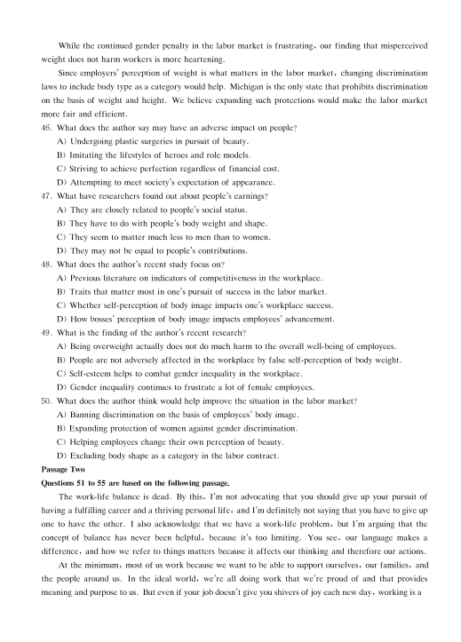
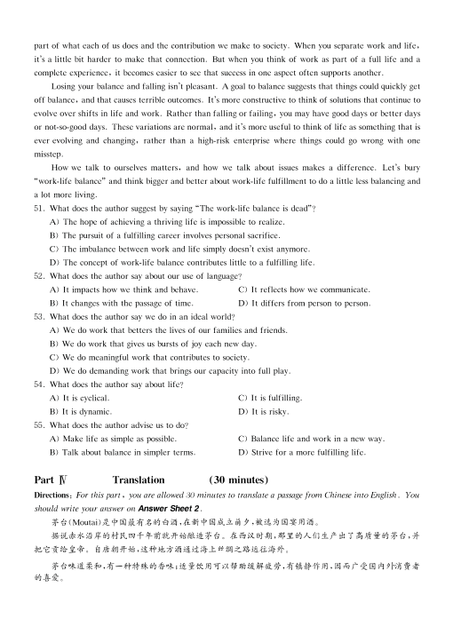

第 1 / 8 页

Part I
Writing
( 30 minutes)
Directions, For this part, you are allowed 30 minutes to write an essay on online libraries. You can start
your essay with the sentence "Online libraries are becoming increasingly popular". You should write at least
120 words but no more than 180 words.
Part II
Listening Comprehension
( 25 minutes)
Section A
Directions, In this section, you will hear three news reports. At the end of each news report, you will hear
two or three questions. Both the news report and the questions will be spoken only once. After you hear a
question, you must choose the best answer from the four choices marked A), B), C) and D). Then mark
the corresponding letter on Answer Sheet 1 with a single line through the centre.
Questions 1 and 2 are based on the news report you have just heard.
1. A) Ship traffic in the Atlantic.
C) Exhaust from cars in Europe.
B) Warm currents in the ocean.
D) Particles emitted by power plants.
2. A) They need to be taken seriously.
C) They might be causing trouble to air flights.
B) They have a huge effect on fishery.
D) They may be affecting the world's climate.
Questions 3 and 4 are based on the news report you have just heard.
3. A) To appeal for higher wages.
C) To call for a permanent security guard.
B) To demand better health care.
D) To dismiss the bad-tempered supervisor.
4. A) ft had already taken strong action.
C) It would take their appeal seriously.
B) It would put customers' needs first.
D) It was seeking help from the police.
Questions 5 to 7 are based on the news report you have just heard.
5. A) The road was flooded.
C) The road was frozen with snow.
B) The road was blocked.
D) The road was covered with spilled gas.
6. A) A truck plunged into a pool of liquid chocolate.
B) The heavy snow made driving very difficult.
C) The truck driver dozed off while driving.
D) A truck hit a barrier and overturned.
7. A) It was a long time before the cleanup was finished.
B) It was a hard task to remove the spilled substance.
C) rt was fortunate that no passenger got injured.
D) It was difficult to contact the manufacturer.
查看 / 复制本页文字
Part I Writing ( 30 minutes) Directions, For this part, you are allowed 30 minutes to write an essay on online libraries. You can start your essay with the sentence "Online libraries are becoming increasingly popular". You should write at least 120 words but no more than 180 words. Part II Listening Comprehension ( 25 minutes) Section A Directions, In this section, you will hear three news reports. At the end of each news report, you will hear two or three questions. Both the news report and the questions will be spoken only once. After you hear a question, you must choose the best answer from the four choices marked A), B), C) and D). Then mark the corresponding letter on Answer Sheet 1 with a single line through the centre. Questions 1 and 2 are based on the news report you have just heard. 1. A) Ship traffic in the Atlantic. C) Exhaust from cars in Europe. B) Warm currents in the ocean. D) Particles emitted by power plants. 2. A) They need to be taken seriously. C) They might be causing trouble to air flights. B) They have a huge effect on fishery. D) They may be affecting the world's climate. Questions 3 and 4 are based on the news report you have just heard. 3. A) To appeal for higher wages. C) To call for a permanent security guard. B) To demand better health care. D) To dismiss the bad-tempered supervisor. 4. A) ft had already taken strong action. C) It would take their appeal seriously. B) It would put customers' needs first. D) It was seeking help from the police. Questions 5 to 7 are based on the news report you have just heard. 5. A) The road was flooded. C) The road was frozen with snow. B) The road was blocked. D) The road was covered with spilled gas. 6. A) A truck plunged into a pool of liquid chocolate. B) The heavy snow made driving very difficult. C) The truck driver dozed off while driving. D) A truck hit a barrier and overturned. 7. A) It was a long time before the cleanup was finished. B) It was a hard task to remove the spilled substance. C) rt was fortunate that no passenger got injured. D) It was difficult to contact the manufacturer.
第 2 / 8 页

Section B
Directions, In this section, you will hear two long conversations. At the end of each conversation, you will
hear four questions. Both the conversation and the questions will be spoken only once. After you hear a
question, you must choose the best answer from the four choices marked A), B), C) and D). Then mark
the corresponding letter on Answer Sheet 1 with a single line through the centre.
Questions 8 to 11 are based on the conversation you have just heard.
8. A) She wanted to save for a new phone.
C) She could enjoy discounts with cash.
B) She found it much safer to use cash.
D) She had been cheated using phone apps.
9. A) They can save a lot more time and trouble.
B) They find it less difficult to make purchases.
C) They derive greater pleasure from buying things.
D) They are less aware of the value of their money.
10. A) More valuable items.
C) Everyday necessities.
B) More non-essential things.
D) Electronic devices.
. A) It can improve shopping efficiency.
C) It may lead to excessive spending.
B) It is altering the way of shopping.
D) It appeals more to younger people.
Questions 12 to 15 are based on the conversation you have just heard.
12. A) He wanted to order some wooden furniture.
B) He had to change the furniture delivery time.
C) He had a problem with the furniture delivered.
D) He wanted the furniture store to give him a refund.
13. A) Send the furniture back to the store.
C) Collect the furniture he ordered.
B) Describe the furniture he received.
D) Buy another brand of furniture.
14. A) Correct their mistake.
C) Apologize to his wife.
B) Improve their service.
D) Give the money back.
15. A) She recommended a new style.
B) She offered some gift to the man.
C) She apologized to the man once more.
D) She checked all the items with the man.
Section C
Directions: In this section, you will hear three passages. At the end of each passage, you will hear three or
four questions. Both the passage and the questions will be spoken only once. After you hear a question, you
must choose the best answer from the four choices marked A ) , B) , C) and D). Then mark the
corre:,ponding letter on Answer Sheet 1 with a single line through the centre.
Questions 16 to 18 are based on the passage you have just heard.
16. A) Reading books of wisdom.
C) Sharing with others.
B) Tidying up one's home.
D) Donating to charity.
17. A) Things that make one happy.
C) Things that occupy little space.
B) Things that are becoming rare.
D) Things that cost a lot of money.
18. A) It joined the city's clean-up campaign.
B) It sold as many as fifty boxes of books.
C) It received an incredibly large number of donated books.
D) It did little business because of the unusual cold weather.
11
查看 / 复制本页文字
Section B Directions, In this section, you will hear two long conversations. At the end of each conversation, you will hear four questions. Both the conversation and the questions will be spoken only once. After you hear a question, you must choose the best answer from the four choices marked A), B), C) and D). Then mark the corresponding letter on Answer Sheet 1 with a single line through the centre. Questions 8 to 11 are based on the conversation you have just heard. 8. A) She wanted to save for a new phone. C) She could enjoy discounts with cash. B) She found it much safer to use cash. D) She had been cheated using phone apps. 9. A) They can save a lot more time and trouble. B) They find it less difficult to make purchases. C) They derive greater pleasure from buying things. D) They are less aware of the value of their money. 10. A) More valuable items. C) Everyday necessities. B) More non-essential things. D) Electronic devices. . A) It can improve shopping efficiency. C) It may lead to excessive spending. B) It is altering the way of shopping. D) It appeals more to younger people. Questions 12 to 15 are based on the conversation you have just heard. 12. A) He wanted to order some wooden furniture. B) He had to change the furniture delivery time. C) He had a problem with the furniture delivered. D) He wanted the furniture store to give him a refund. 13. A) Send the furniture back to the store. C) Collect the furniture he ordered. B) Describe the furniture he received. D) Buy another brand of furniture. 14. A) Correct their mistake. C) Apologize to his wife. B) Improve their service. D) Give the money back. 15. A) She recommended a new style. B) She offered some gift to the man. C) She apologized to the man once more. D) She checked all the items with the man. Section C Directions: In this section, you will hear three passages. At the end of each passage, you will hear three or four questions. Both the passage and the questions will be spoken only once. After you hear a question, you must choose the best answer from the four choices marked A ) , B) , C) and D). Then mark the corre:,ponding letter on Answer Sheet 1 with a single line through the centre. Questions 16 to 18 are based on the passage you have just heard. 16. A) Reading books of wisdom. C) Sharing with others. B) Tidying up one's home. D) Donating to charity. 17. A) Things that make one happy. C) Things that occupy little space. B) Things that are becoming rare. D) Things that cost a lot of money. 18. A) It joined the city's clean-up campaign. B) It sold as many as fifty boxes of books. C) It received an incredibly large number of donated books. D) It did little business because of the unusual cold weather. 11
第 3 / 8 页

Questions 19 to 21 are based on the passage you have just heard.
19. A) Give free meals to the homeless.
C) Help the vulnerable to cook lunches.
B) Provide shelter for the homeless.
D) Call for change in the local government.
20. A) Strengthen co-operation.
C) Win national support.
B) Promote understanding.
D) Follow his example.
21. A) Spreading news of his deeds.
C) Following the example he sets.
B) Writing him thank-you notes.
D) Sending him hand-made bags.
Questions 22 to 25 are based on the passage you have just heard.
22. A) To solve word search puzzles.
B) To send smartphone messages.
C) To test their eyesight using a phone app.
D) To install some audio equipment in a lab.
23. A) They could not go on until the ringing stopped.
B) They could no longer concentrate on their task.
C) They grabbed the phone and called back right away.
D) They asked their experimenter to hang up the phone.
24. A) A rise in emotional problems.
C) A reduction in the amount of sleep.
B) A decline in sports activities.
D) A decline in academic performance.
25. A) Protect the eyesight of the younger generation.
B) Take effective measures to raise productivity.
C) Realize the disruptive effects of technology.
D) Ensure they have sufficient sleep every day.
Part ]I
Section A
Reading Comprehension
( 40 minutes)
Directions, In this section, there is a passage with ten blanks. You are required to select one word for each
blank from a list of choices given in a word bank following the passage. Read the passage through carefully
before making your choices. Each choice in the bank is identified by a letter. Please mark the corresponding
letter for each item on Answer Sheet 2 with a single line through the centre. You may ,wt use any of the
words in the bank more than once.
There're three main types of financial stress people encounter. The first type is apparent in people
being stressed about the
26
ups and downs of investment markets-actually not so much the ups,
but
27
the downs. These people are usually unable or unprepared to endure the long haul.
The next common type of financial stress is that caused by debt. In a
28
percentage of cases of
debt-induced financial stress, credit cards and loans will be a central element. Often there'll be a car loan
and perhaps a mortgage, but credit cards often seem to be the gateway to debt-related financial difficulties
for many.
The third type of stress and
the least known is inherited financial stress, which is the most
destructive. It is experienced by those who have grown up in households where their parents regularly
30
and fought about money. Money therefore becomes a stressful topic, and so the thought of
sitting down and planning is an unattractive
31
Those suffering inherited financial anxiety
32
to follow one of two patterns. Either they put
their head in the sand, they would
33
examining their financial statements, budgeting, and
29
查看 / 复制本页文字
Questions 19 to 21 are based on the passage you have just heard. 19. A) Give free meals to the homeless. C) Help the vulnerable to cook lunches. B) Provide shelter for the homeless. D) Call for change in the local government. 20. A) Strengthen co-operation. C) Win national support. B) Promote understanding. D) Follow his example. 21. A) Spreading news of his deeds. C) Following the example he sets. B) Writing him thank-you notes. D) Sending him hand-made bags. Questions 22 to 25 are based on the passage you have just heard. 22. A) To solve word search puzzles. B) To send smartphone messages. C) To test their eyesight using a phone app. D) To install some audio equipment in a lab. 23. A) They could not go on until the ringing stopped. B) They could no longer concentrate on their task. C) They grabbed the phone and called back right away. D) They asked their experimenter to hang up the phone. 24. A) A rise in emotional problems. C) A reduction in the amount of sleep. B) A decline in sports activities. D) A decline in academic performance. 25. A) Protect the eyesight of the younger generation. B) Take effective measures to raise productivity. C) Realize the disruptive effects of technology. D) Ensure they have sufficient sleep every day. Part ]I Section A Reading Comprehension ( 40 minutes) Directions, In this section, there is a passage with ten blanks. You are required to select one word for each blank from a list of choices given in a word bank following the passage. Read the passage through carefully before making your choices. Each choice in the bank is identified by a letter. Please mark the corresponding letter for each item on Answer Sheet 2 with a single line through the centre. You may ,wt use any of the words in the bank more than once. There're three main types of financial stress people encounter. The first type is apparent in people being stressed about the 26 ups and downs of investment markets-actually not so much the ups, but 27 the downs. These people are usually unable or unprepared to endure the long haul. The next common type of financial stress is that caused by debt. In a 28 percentage of cases of debt-induced financial stress, credit cards and loans will be a central element. Often there'll be a car loan and perhaps a mortgage, but credit cards often seem to be the gateway to debt-related financial difficulties for many. The third type of stress and the least known is inherited financial stress, which is the most destructive. It is experienced by those who have grown up in households where their parents regularly 30 and fought about money. Money therefore becomes a stressful topic, and so the thought of sitting down and planning is an unattractive 31 Those suffering inherited financial anxiety 32 to follow one of two patterns. Either they put their head in the sand, they would 33 examining their financial statements, budgeting, and 29
第 4 / 8 页

discussing financial matters with those closest to them. Alternatively, they would go to the other
34
, and micro-analyze everything, to the point of complete
. They're convinced that
whatever decision they make will be the wrong one.
A) appearance
F) extreme
K) proposition
B) argued
G) inaction
L) rebelled
C) avoid
H) incredibly
M) statement
D) considerable
I) normal
N) tend
E) definitely
J) possibly
0) traditional
A) Imagine a drug that could enhance a child's creativity and critical thinking. Imagine that this drug were
simple to make, safe to take, and could be had for free. The nation's leading pediatricians ( JL,H !E. _i.)
say this miracle compound exists. In a new clinical report, they are urging doctors to prescribe it
liberally to the children in their care.
B) "This may seem old-fashioned, but there are skills to be learned when kids aren't told what to do,"
said Dr. Michael Yogman, a Harvard Medical School pediatrician who led the drafting of the call to
arms. Whether it's rough physical play, outdoor play or pretend play, kids derive important lessons
from the chance to make things up as they go, he said.
C) The advice, issued Monday by the American Academy of Pediatrics, may come as a shock to some
parents. After spending years fretting ( ;l:yf ·tit) over which toys to buy, which apps to download and
which skill-building programs to send their kids to after school, letting them simply play-or better
yet, playing with them-could seem like a step backward. The pediatricians insist that it's not. The
academy's guidance does not include specific recommendations for the dosing of play. Instead, it asks
doctors to advise parents before their babies turn two that play is essential to healthy development.
D) "Play is not silly behavior," the academy's report declares.
It fosters children's creativity,
cooperation, and problem-solving skills-all of which are critical for a 2lst-century workforce. When
parents engage in play with their children, it builds a wall against the harmful effects of all kinds of
stress, including poverty, the academy says. In the pediatricians' view, essentially every life skill that's
valued in adults can be built up with play. "Collaboration, negotiation, decision-making, creativity,
leadership, and increased physical activity are just some of the skills and benefits children gain through
play," they wrote. The pediatricians' appeal comes as kids are being squeezed by increasing academic
demands at school and the constant invasion of digital media.
E) The trends have been a long time coming. Between 1981 and 1997, detailed time-use studies showed
that the time children spent at play declined by 25 percent. Since the adoption of sweeping education
reforms in 2001, public schools have steadily increased the amount of time devoted to preparing for
standardized tests. The focus on academic "skills and drills" has cut deeply into recess (-iJf_ fa] 1;/c..,@:) and
other time for free play.
Section B
Directions: In this section, you are going to read a passage with ten statements attached to it. Each
statement contains information given in one of the paragraphs. Identify the paragraph from which the
information is derived. You may choose a paragraph more than once. Each paragraph is marked with a
letter. Answer the questions by marking the corresponding letter on Answer Sheet 2.
Doctor's orders: Let children just play
35
查看 / 复制本页文字
discussing financial matters with those closest to them. Alternatively, they would go to the other 34 , and micro-analyze everything, to the point of complete . They're convinced that whatever decision they make will be the wrong one. A) appearance F) extreme K) proposition B) argued G) inaction L) rebelled C) avoid H) incredibly M) statement D) considerable I) normal N) tend E) definitely J) possibly 0) traditional A) Imagine a drug that could enhance a child's creativity and critical thinking. Imagine that this drug were simple to make, safe to take, and could be had for free. The nation's leading pediatricians ( JL,H !E. _i.) say this miracle compound exists. In a new clinical report, they are urging doctors to prescribe it liberally to the children in their care. B) "This may seem old-fashioned, but there are skills to be learned when kids aren't told what to do," said Dr. Michael Yogman, a Harvard Medical School pediatrician who led the drafting of the call to arms. Whether it's rough physical play, outdoor play or pretend play, kids derive important lessons from the chance to make things up as they go, he said. C) The advice, issued Monday by the American Academy of Pediatrics, may come as a shock to some parents. After spending years fretting ( ;l:yf ·tit) over which toys to buy, which apps to download and which skill-building programs to send their kids to after school, letting them simply play-or better yet, playing with them-could seem like a step backward. The pediatricians insist that it's not. The academy's guidance does not include specific recommendations for the dosing of play. Instead, it asks doctors to advise parents before their babies turn two that play is essential to healthy development. D) "Play is not silly behavior," the academy's report declares. It fosters children's creativity, cooperation, and problem-solving skills-all of which are critical for a 2lst-century workforce. When parents engage in play with their children, it builds a wall against the harmful effects of all kinds of stress, including poverty, the academy says. In the pediatricians' view, essentially every life skill that's valued in adults can be built up with play. "Collaboration, negotiation, decision-making, creativity, leadership, and increased physical activity are just some of the skills and benefits children gain through play," they wrote. The pediatricians' appeal comes as kids are being squeezed by increasing academic demands at school and the constant invasion of digital media. E) The trends have been a long time coming. Between 1981 and 1997, detailed time-use studies showed that the time children spent at play declined by 25 percent. Since the adoption of sweeping education reforms in 2001, public schools have steadily increased the amount of time devoted to preparing for standardized tests. The focus on academic "skills and drills" has cut deeply into recess (-iJf_ fa] 1;/c..,@:) and other time for free play. Section B Directions: In this section, you are going to read a passage with ten statements attached to it. Each statement contains information given in one of the paragraphs. Identify the paragraph from which the information is derived. You may choose a paragraph more than once. Each paragraph is marked with a letter. Answer the questions by marking the corresponding letter on Answer Sheet 2. Doctor's orders: Let children just play 35
第 5 / 8 页

F) By 2009, a study of Los Angeles kindergarten classrooms found that five-year-olds were so burdened
with academic requirements that they were down to an average of just 19 minutes per day of "choice
time," when they were permitted to play freely with blocks, toys or other children. One in four Los
Angeles teachers reported there was no time at all for "free play." Increased academic pressures have
left 30 percent of U.S. kindergarten classes without any recess. Such findings prompted the American
Academy of Pediatrics to issue a policy statement in 2013 on the "crucial role of recess in school."
G) Pediatricians aren't the only ones who have noticed. Tn a report titled "Crisis in the Kindergarten," a
group of educators, health professionals and child advocates called the loss of play in early childhood
''a tragedy, both for the children themselves and for our nation and the world." Kids in play-based
kindergartens "end up equally good or better at reading and other intellectual skills, and they are more
likely to become well-adjusted healthy people," the Alliance for Childhood said in 2009. Indeed, new
research demonstrates why playing with blocks might have been time better spent, Yogman said. The
trial assessed the effectiveness of an early mathematics intervention ( -tffii) aimed at preschoolers. The
results showed almost no gains in math achievement.
H) Another playtime thief: the growing proportion of kids' time spent in front of screens and digital
devices, even among preschoolers. Last year, Common Sense Media reported that children up through
age eight spent an average of two hours and 19 minutes in front of screens each day, including an
average of 42 minutes a day for those under two. This increase of digital use comes with rising risks of
obesity, sleep deprivation and cognitive ( iJ.. 9'11 a-ii ) , language and social-emotional delays, the
American Academy of Pediatrics warned in 2016.
I)
"I respect that parents have busy lives and it's easy to hand a child an iPhone," Yogman said. "But
there's a cost to that. For young children, it's much too passive. And kids really learn better when
they're actively engaged and have to really discover things."
J) The decline of play is a special hazard for the roughly 1 in 5 children in the United States who live in
poverty. These 14 million children most urgently need to develop the resilience ( -'pJ.1 <J}J ) that is
cultivated with play. Instead, Yogman said, they are disproportionately affected by some of the trends
that are making play scarce: academic pressures at schools that need to improve test scores, outside
play areas that are limited or unsafe, and parents who lack the time or energy to share in playtime.
K) Yogman also worries about the pressures that squeeze playtime for more affluent kids. "The notion
that as parents we need to schedule every minute of their time is not doing them a great service," he
said. Even well-meaning parents may be "robbing them of the opportunity to have that joy of discovery
and curiosity-the opportunity to find things out on their own. "
L) Play may not be a hard sell to kids. But UCLA pediatrician Carlos Lerner acknowledged that the
pediatricians' new prescription may meet with skepticism OZ-iit.) from parents, who are anxious for
advice on how to give their kids a leg up in the world. They should welcome the simplicity of the
message, Lerner said. "It's liberating to be able to offer them this advice: that you spending time with
your child and letting him play is one of the most valuable things you can do," he said. "It doesn't have
to involve spending a lot of money or time, or joining a parenting group. It's something we can offer
that's achievable. They just don't recognize it right now as particularly valuable."
36. Increased use of digital devices steals away children's playtime.
37. Since the beginning of this century, an increasing amount of time has been shifted in public schools
from recess to academic activities.
查看 / 复制本页文字
F) By 2009, a study of Los Angeles kindergarten classrooms found that five-year-olds were so burdened with academic requirements that they were down to an average of just 19 minutes per day of "choice time," when they were permitted to play freely with blocks, toys or other children. One in four Los Angeles teachers reported there was no time at all for "free play." Increased academic pressures have left 30 percent of U.S. kindergarten classes without any recess. Such findings prompted the American Academy of Pediatrics to issue a policy statement in 2013 on the "crucial role of recess in school." G) Pediatricians aren't the only ones who have noticed. Tn a report titled "Crisis in the Kindergarten," a group of educators, health professionals and child advocates called the loss of play in early childhood ''a tragedy, both for the children themselves and for our nation and the world." Kids in play-based kindergartens "end up equally good or better at reading and other intellectual skills, and they are more likely to become well-adjusted healthy people," the Alliance for Childhood said in 2009. Indeed, new research demonstrates why playing with blocks might have been time better spent, Yogman said. The trial assessed the effectiveness of an early mathematics intervention ( -tffii) aimed at preschoolers. The results showed almost no gains in math achievement. H) Another playtime thief: the growing proportion of kids' time spent in front of screens and digital devices, even among preschoolers. Last year, Common Sense Media reported that children up through age eight spent an average of two hours and 19 minutes in front of screens each day, including an average of 42 minutes a day for those under two. This increase of digital use comes with rising risks of obesity, sleep deprivation and cognitive ( iJ.. 9'11 a-ii ) , language and social-emotional delays, the American Academy of Pediatrics warned in 2016. I) "I respect that parents have busy lives and it's easy to hand a child an iPhone," Yogman said. "But there's a cost to that. For young children, it's much too passive. And kids really learn better when they're actively engaged and have to really discover things." J) The decline of play is a special hazard for the roughly 1 in 5 children in the United States who live in poverty. These 14 million children most urgently need to develop the resilience ( -'pJ.1 <J}J ) that is cultivated with play. Instead, Yogman said, they are disproportionately affected by some of the trends that are making play scarce: academic pressures at schools that need to improve test scores, outside play areas that are limited or unsafe, and parents who lack the time or energy to share in playtime. K) Yogman also worries about the pressures that squeeze playtime for more affluent kids. "The notion that as parents we need to schedule every minute of their time is not doing them a great service," he said. Even well-meaning parents may be "robbing them of the opportunity to have that joy of discovery and curiosity-the opportunity to find things out on their own. " L) Play may not be a hard sell to kids. But UCLA pediatrician Carlos Lerner acknowledged that the pediatricians' new prescription may meet with skepticism OZ-iit.) from parents, who are anxious for advice on how to give their kids a leg up in the world. They should welcome the simplicity of the message, Lerner said. "It's liberating to be able to offer them this advice: that you spending time with your child and letting him play is one of the most valuable things you can do," he said. "It doesn't have to involve spending a lot of money or time, or joining a parenting group. It's something we can offer that's achievable. They just don't recognize it right now as particularly valuable." 36. Increased use of digital devices steals away children's playtime. 37. Since the beginning of this century, an increasing amount of time has been shifted in public schools from recess to academic activities.
第 6 / 8 页

38. It has been acknowledged that while kids may welcome pediatricians' recommendation, their parents
may doubt its feasibility.
39. According to some professionals, deprivation of young children's playtime will do harm not only to
children themselves but to the country and the world.
40. By playing with children, parents can prevent them from being harmed by stress.
41. Playing with digital devices discourages kids from active discovery, according to pediatrician
Dr. Michael Yogman.
42. The suggestion of letting children simply play may sound like going backwards to parents who want to
help build their children's skills.
43. Dr. Michael Yogman believes the idea that parents should carefully schedule children's time may not
be helpful to their growth.
44. One quarter of teachers in an American city said that children in kindergartens had no time for playing
freely.
45. According to a pediatrician, no matter what kind of play children engage in, they are learning how to
create things.
Section C
Directions: There are 2 passages in this section. Each passage is followed by some questions or unfinished
statements. For each of them there are four choices marked A), B), C) and D). You should decide on the
best choice and mark the corresponding letter on Answer Sheet 2 with a single line through the centre.
Passage One
Questions 46 to 50 are based on the following passage.
Americans spend billions of dollars each year trying to change their weight with diets, gym
memberships and plastic surgery.
Trying to live up to the images of ''perfect" models and movie heroes has a dark side, anxiety,
depression, as well as unhealthy strategies for weight loss or muscle gain. It also has a financial cost.
Having an eating disorder boosts annual health care costs by nearly US$ 2,000 per person.
Why is there both external and internal pressure to look "perfect"? One reason is that society rewards
people who are thin and healthy-looking. Researchers have shown that body mass index is related to wages
and income. Especially for women, there is a clear penalty at work for being overweight or obese. Some
studies have also found an impact for men, though a less noticeable one.
While the research literature is clear that labor market success is partly based on how employers and
customers perceive your body image, no one had explored the other side of the question. Does a person's
own perception of body image matter to earnings and other indicators of success in the workplace?
Our recently published study answered this question by tracking a large national random sample of
Americans over a critical time period when bodies change from teenage shape into adult form and when
people build their identities.
As in other research, women in our sample tend to over-perceive their weight-they think they're
heavier than they are-while men tend to under-perceive theirs.
We found no relationship between the average person's self-perception of weight and labor market
outcomes, although self-perceived weight can influence self-esteem ( i1l .:if.,(;), mental health and health
behaviors.
查看 / 复制本页文字
38. It has been acknowledged that while kids may welcome pediatricians' recommendation, their parents may doubt its feasibility. 39. According to some professionals, deprivation of young children's playtime will do harm not only to children themselves but to the country and the world. 40. By playing with children, parents can prevent them from being harmed by stress. 41. Playing with digital devices discourages kids from active discovery, according to pediatrician Dr. Michael Yogman. 42. The suggestion of letting children simply play may sound like going backwards to parents who want to help build their children's skills. 43. Dr. Michael Yogman believes the idea that parents should carefully schedule children's time may not be helpful to their growth. 44. One quarter of teachers in an American city said that children in kindergartens had no time for playing freely. 45. According to a pediatrician, no matter what kind of play children engage in, they are learning how to create things. Section C Directions: There are 2 passages in this section. Each passage is followed by some questions or unfinished statements. For each of them there are four choices marked A), B), C) and D). You should decide on the best choice and mark the corresponding letter on Answer Sheet 2 with a single line through the centre. Passage One Questions 46 to 50 are based on the following passage. Americans spend billions of dollars each year trying to change their weight with diets, gym memberships and plastic surgery. Trying to live up to the images of ''perfect" models and movie heroes has a dark side, anxiety, depression, as well as unhealthy strategies for weight loss or muscle gain. It also has a financial cost. Having an eating disorder boosts annual health care costs by nearly US$ 2,000 per person. Why is there both external and internal pressure to look "perfect"? One reason is that society rewards people who are thin and healthy-looking. Researchers have shown that body mass index is related to wages and income. Especially for women, there is a clear penalty at work for being overweight or obese. Some studies have also found an impact for men, though a less noticeable one. While the research literature is clear that labor market success is partly based on how employers and customers perceive your body image, no one had explored the other side of the question. Does a person's own perception of body image matter to earnings and other indicators of success in the workplace? Our recently published study answered this question by tracking a large national random sample of Americans over a critical time period when bodies change from teenage shape into adult form and when people build their identities. As in other research, women in our sample tend to over-perceive their weight-they think they're heavier than they are-while men tend to under-perceive theirs. We found no relationship between the average person's self-perception of weight and labor market outcomes, although self-perceived weight can influence self-esteem ( i1l .:if.,(;), mental health and health behaviors.
第 7 / 8 页

While the continued gender penalty in the tabor market is frustrating, our finding that misperceived
weight does not harm workers is more heartening.
Since employers' perception of weight is what matters in the tabor market, changing discrimination
laws to include body type as a category would help. Michigan is the only state that prohibits discrimination
on the basis of weight and height. We believe expanding such protections would make the labor market
more fair and efficient.
46. What does the author say may have an adverse impact on people?
A) Undergoing plastic surgeries in pursuit of beauty.
B) Imitating the lifestyles of heroes and role models.
C) Striving to achieve perfection regardless of financial cost.
D) Attempting to meet society's expectation of appearance.
47. What have researchers found out about people's earnings?
A) They are closely related to people's social status.
B) They have to do with people's body weight and shape.
C) They seem to matter much less to men than to women.
D) They may not be equal to people's contributions.
48. What does the author's recent study focus on?
A) Previous literature on indicators of competitiveness in the workplace.
B) Traits that matter most in one's pursuit of success in the labor market.
C) Whether self-perception of body image impacts one's workplace success.
D) How bosses' perception of body image impacts employees' advancement.
49. What is the finding of the author's recent research?
A) Being overweight actually does not do much harm to the overall well-being of employees.
B) People are not adversely affected in the workplace by false self-perception of body weight.
C) Self-esteem helps to combat gender inequality in the workplace.
D) Gender inequality continues to frustrate a lot of female employees.
50. What does the author think would help improve the situation in the labor market?
A) Banning discrimination on the basis of employees' body image.
B) Expanding protection of women against gender discrimination.
C) Helping employees change their own perception of beauty.
D) Excluding body shape as a category in the labor contract.
Passage Two
Questions 51 to 55 are based on the following passage.
The work-life balance is dead. By this, I'm not advocating that you should give up your pursuit of
having a fulfilling career and a thriving personal life, and I'm definitely not saying that you have to give up
one to have the other. I also acknowledge that we have a work-life problem, but I'm arguing that the
concept of balance has never been helpful, because it's too limiting. You see, our language makes a
difference, and how we refer to things matters because it affects our thinking and therefore our actions.
At the minimum, most of us work because we want to be able to support ourselves, our families, and
the people around us. In the ideal world, we're all doing work that we're proud of and that provides
meaning and purpose to us. But even if your job doesn't give you shivers of joy each new day, working is a
查看 / 复制本页文字
While the continued gender penalty in the tabor market is frustrating, our finding that misperceived weight does not harm workers is more heartening. Since employers' perception of weight is what matters in the tabor market, changing discrimination laws to include body type as a category would help. Michigan is the only state that prohibits discrimination on the basis of weight and height. We believe expanding such protections would make the labor market more fair and efficient. 46. What does the author say may have an adverse impact on people? A) Undergoing plastic surgeries in pursuit of beauty. B) Imitating the lifestyles of heroes and role models. C) Striving to achieve perfection regardless of financial cost. D) Attempting to meet society's expectation of appearance. 47. What have researchers found out about people's earnings? A) They are closely related to people's social status. B) They have to do with people's body weight and shape. C) They seem to matter much less to men than to women. D) They may not be equal to people's contributions. 48. What does the author's recent study focus on? A) Previous literature on indicators of competitiveness in the workplace. B) Traits that matter most in one's pursuit of success in the labor market. C) Whether self-perception of body image impacts one's workplace success. D) How bosses' perception of body image impacts employees' advancement. 49. What is the finding of the author's recent research? A) Being overweight actually does not do much harm to the overall well-being of employees. B) People are not adversely affected in the workplace by false self-perception of body weight. C) Self-esteem helps to combat gender inequality in the workplace. D) Gender inequality continues to frustrate a lot of female employees. 50. What does the author think would help improve the situation in the labor market? A) Banning discrimination on the basis of employees' body image. B) Expanding protection of women against gender discrimination. C) Helping employees change their own perception of beauty. D) Excluding body shape as a category in the labor contract. Passage Two Questions 51 to 55 are based on the following passage. The work-life balance is dead. By this, I'm not advocating that you should give up your pursuit of having a fulfilling career and a thriving personal life, and I'm definitely not saying that you have to give up one to have the other. I also acknowledge that we have a work-life problem, but I'm arguing that the concept of balance has never been helpful, because it's too limiting. You see, our language makes a difference, and how we refer to things matters because it affects our thinking and therefore our actions. At the minimum, most of us work because we want to be able to support ourselves, our families, and the people around us. In the ideal world, we're all doing work that we're proud of and that provides meaning and purpose to us. But even if your job doesn't give you shivers of joy each new day, working is a
第 8 / 8 页

part of what each of us does and the contribution we make to society. When you separate work and life,
it's a little bit harder to make that connection. But when you think of work as part of a full life and a
complete experience, it becomes easier to see that success in one aspect often supports another.
Losing your balance and falling isn't pleasant. A goal to balance suggests that things could quickly get
off balance, and that causes terrible outcomes. rt's more constructive to think of solutions that continue to
evolve over shifts in life and work. Rather than falling or failing, you may have good days or better days
or not-so-good days. These variations are normal, and it's more useful to think of life as something that is
ever evolving and changing, rather than a high-risk enterprise where things could go wrong with one
misstep.
How we talk to ourselves matters, and how we talk about issues makes a difference. Let's bury
"work-life balance" and think bigger and better about work-life fulfillment to do a little less balancing and
a lot more living.
51. What does the author suggest by saying "The work-life balance is dead"?
A) The hope of achieving a thriving life is impossible to realize.
B) The pursuit of a fulfilling career involves personal sacrifice.
C) The imbalance between work and life simply doesn't exist anymore.
D) The concept of work-life balance contributes little to a fulfilling life.
52. What does the author say about our use of language?
A) It impacts how we think and behave.
C) It reflects how we communicate.
B) It changes with the passage of time.
D) It differs from person to person.
53. What does the author say we do in an ideal world?
A) We do work that betters the lives of our families and friends.
B) We do work that gives us bursts of joy each new day.
C) We do meaningful work that contributes to society.
D) We do demanding work that brings our capacity into full play.
54. What does the author say about life?
A) It is cyclical.
C) It is fulfilling.
B) It is dynamic.
D) It is risky.
55. What does the author advise us to do?
A) Make life as simple as possible.
C) Balance life and work in a new way.
B) Talk about balance in simpler terms.
D) Strive for a more fulfilling life.
Part N
Translation
( 30 minutes)
Directions, For this part, you are allowed 80 minutes to translate a passage from Chinese into English. You
should write your answer on Answer Sheet 2.
:;f 1; (Moutai)¾. 'f 00 ¤;;tf ¥ a'-J El il!l, ,,(f. ,i)j- 'f 00 A.i.. ri;J f1 ,:tk¦;)IJ 00 § Jll il!l,
-¨©**ªa'-1#«¬®¯°¿À-±:;f-1;, ,tf.&OC²³.´Ia'-JAfilµ?*Y¶·ia'-J:;f-1;,*
¸¹º»••, ¼½¾¿À.Á#ÂÃÄÅttÆÇMÈÉ-Ê&ÆË'
:;f 'f; v,t i! * :f" , ;;tf' -# ;/,t 7Jf.. a<] ;} v,t ; it i ,tk_ Jll of VA �I Jl}J Ì fffer. 7'it '.ff , ;;tf' 4Jl. {t 11 Jll , lEJ ,m T 1'.:_ 00 fJ 7 j-;jlj 'Iff %
a<; ¾t'.,
查看 / 复制本页文字
本页源文件的文字编码有异常。原卷显示正常；复制文字需对照原卷核查。
part of what each of us does and the contribution we make to society. When you separate work and life,
it's a little bit harder to make that connection. But when you think of work as part of a full life and a
complete experience, it becomes easier to see that success in one aspect often supports another.
Losing your balance and falling isn't pleasant. A goal to balance suggests that things could quickly get
off balance, and that causes terrible outcomes. rt's more constructive to think of solutions that continue to
evolve over shifts in life and work. Rather than falling or failing, you may have good days or better days
or not-so-good days. These variations are normal, and it's more useful to think of life as something that is
ever evolving and changing, rather than a high-risk enterprise where things could go wrong with one
misstep.
How we talk to ourselves matters, and how we talk about issues makes a difference. Let's bury
"work-life balance" and think bigger and better about work-life fulfillment to do a little less balancing and
a lot more living.
51. What does the author suggest by saying "The work-life balance is dead"?
A) The hope of achieving a thriving life is impossible to realize.
B) The pursuit of a fulfilling career involves personal sacrifice.
C) The imbalance between work and life simply doesn't exist anymore.
D) The concept of work-life balance contributes little to a fulfilling life.
52. What does the author say about our use of language?
A) It impacts how we think and behave.
C) It reflects how we communicate.
B) It changes with the passage of time.
D) It differs from person to person.
53. What does the author say we do in an ideal world?
A) We do work that betters the lives of our families and friends.
B) We do work that gives us bursts of joy each new day.
C) We do meaningful work that contributes to society.
D) We do demanding work that brings our capacity into full play.
54. What does the author say about life?
A) It is cyclical.
C) It is fulfilling.
B) It is dynamic.
D) It is risky.
55. What does the author advise us to do?
A) Make life as simple as possible.
C) Balance life and work in a new way.
B) Talk about balance in simpler terms.
D) Strive for a more fulfilling life.
Part N
Translation
( 30 minutes)
Directions, For this part, you are allowed 80 minutes to translate a passage from Chinese into English. You
should write your answer on Answer Sheet 2.
:;f 1; (Moutai)¾. 'f 00 ¤;;tf ¥ a'-J El il!l, ,,(f. ,i)j- 'f 00 A.i.. ri;J f1 ,:tk¦;)IJ 00 § Jll il!l,
-¨©**ªa'-1#«¬®¯°¿À-±:;f-1;, ,tf.&OC²³.´Ia'-JAfilµ?*Y¶·ia'-J:;f-1;,*
¸¹º»••, ¼½¾¿À.Á#ÂÃÄÅttÆÇMÈÉ-Ê&ÆË'
:;f 'f; v,t i! * :f" , ;;tf' -# ;/,t 7Jf.. a<] ;} v,t ; it i ,tk_ Jll of VA �I Jl}J Ì fffer. 7'it '.ff , ;;tf' 4Jl. {t 11 Jll , lEJ ,m T 1'.:_ 00 fJ 7 j-;jlj 'Iff %
a<; ¾t'.,